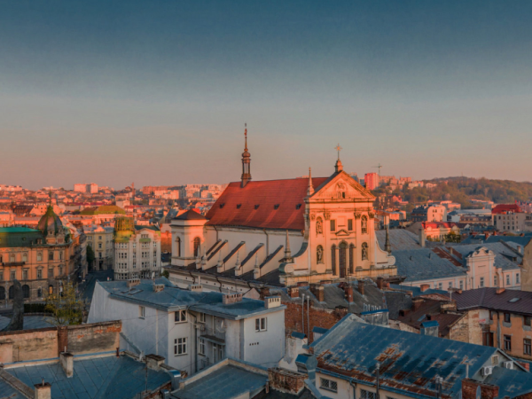

Дата та місце народженння: 18.09.2003, Київ
Освіта: Школа: ТЛ НТУУ "КПІ", м.Київ; Університет: НТУУ "КПІ", м.Київ
Моє хобі
Мої улюблені фільми
Улюблене місто, де я бував - Львів
Львів - це чарівне місто в Україні, яке відоме своєю багатою історією, архітектурною красою і культурною спадщиною.
Місто сповнене середньовічних вуличок, готичних катедралей, ярмарків і кав'ярень, що надають йому особливий романтичний шарм.
Львів також славиться своєю кухнею, де можна скуштувати смачні страви та солодощі.
Незабутні враження гарантовані для кожного, хто відвідає це чудове місто.
